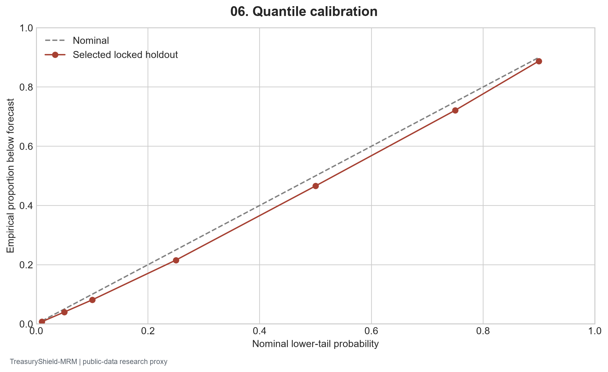
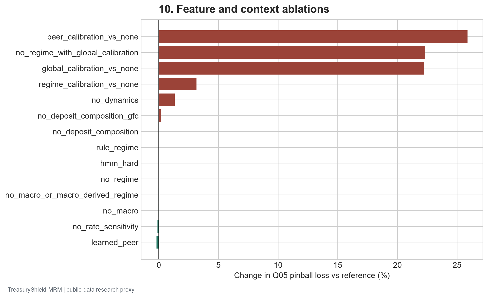
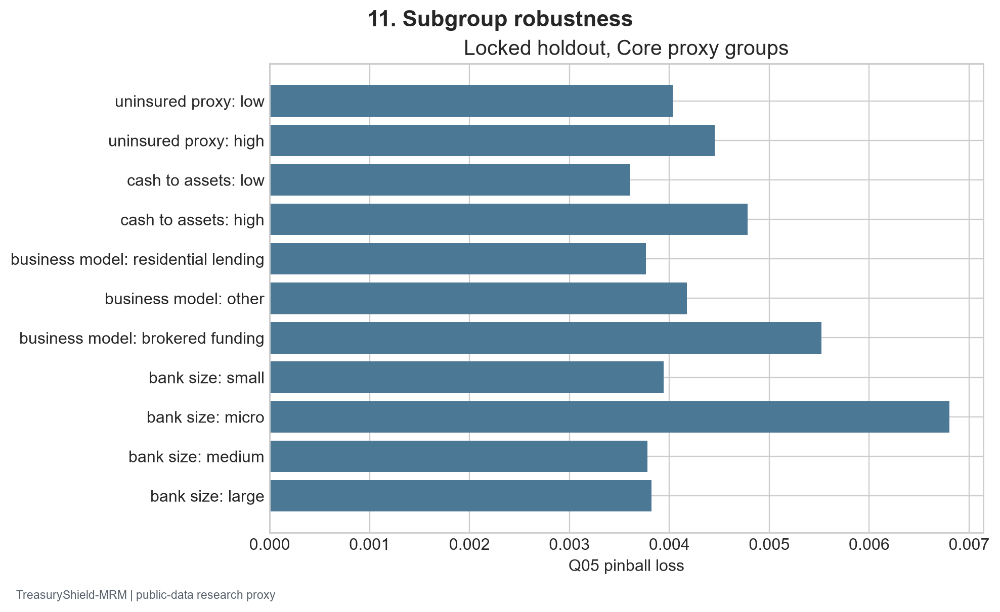
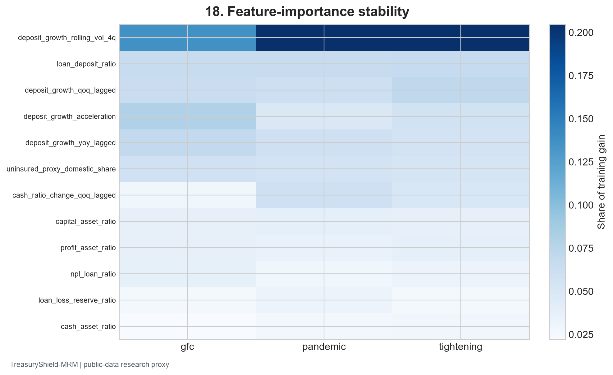
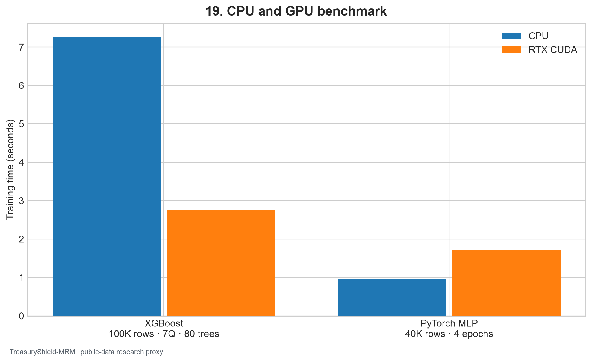

Frozen public-data snapshot fbc0b7b5a2c46fbcc0b5 | Generated 2026-09-27 UTC
One commercial bank RSSD ID and reporting quarter is the unit. The primary target is 1Q log deposit growth, with 2Q and 4Q secondary targets. Bank reports are assumed public after 45 days; model, peer, regime, preprocessing, and calibration inputs are fitted inside historical training partitions. Mode B uses available ALFRED vintages for selected macro series. The GFC, pandemic, and tightening test periods are prelock episodes; only the 2024+ forecast-origin window is independent of model choice.
| Model | GFC Q05 | Pandemic Q05 | Tightening Q05 | Equal episode mean | Max coverage error | Improvement vs best simple (%) | Proposed prelock gate |
|---|---|---|---|---|---|---|---|
| B7_xgb_quantile | 0.007216 | 0.006221 | 0.006132 | 0.006523 | 0.031946 | NaN | None |
| B8_lightgbm_quantile | 0.006847 | 0.005943 | 0.005712 | 0.006167 | 0.032398 | NaN | None |
| B8_lightgbm_quantile adaptive | 0.006741 | 0.005969 | 0.006725 | 0.006478 | 0.107587 | NaN | None |
| B8_lightgbm_quantile adaptive | 0.006753 | 0.005959 | 0.006801 | 0.006505 | 0.111896 | NaN | None |
| B8_lightgbm_quantile adaptive | 0.006763 | 0.005846 | 0.006378 | 0.006329 | 0.064589 | NaN | None |
| RAHQ_C_tree | 0.007094 | 0.005993 | 0.007425 | 0.006837 | 0.123094 | -10.859463 | False |
| RAHQ_C_tree adaptive | 0.007105 | 0.005886 | 0.006820 | 0.006603 | 0.068741 | -7.069996 | False |
| RAHQ_C_nn | 0.006685 | 0.005489 | 0.007685 | 0.006620 | 0.162475 | -7.335818 | False |
| RAHQ_C_nn adaptive | 0.006706 | 0.005497 | 0.006695 | 0.006299 | 0.085223 | -2.136226 | False |
| split | value | reference_value |
|---|---|---|
| gfc | 0.006847 | 0.004243 |
| pandemic | 0.005943 | 0.004243 |
| tightening | 0.005712 | 0.004243 |
| run_id | trials | completed | pruned | best_inner_q05 |
|---|---|---|---|---|
| hpo_core_B_rahq_tree | 4 | 3 | 1 | 0.004855 |
| hpo_core_B_xgb | 6 | 5 | 1 | 0.004674 |
Optuna configurations and every completed/pruned trial are stored in the warehouse. Inner 2016–19 folds apply to pandemic and later design work, not to the earlier GFC fit.
The 2022–23 tightening episode exposed substantial calibration and neural-model instability. No model is presumed to win because it is more complex. The full simple and strong challenger suite remains in the prediction warehouse.
| Episode | Quarters | Q05 pinball | Rows |
|---|---|---|---|
| gfc | 2 | 0.009380 | 65772 |
| pandemic | 2 | 0.008207 | 32659 |
| tightening | 2 | 0.008397 | 31375 |
| gfc | 4 | 0.012615 | 63302 |
| pandemic | 4 | 0.011871 | 31526 |
| tightening | 4 | 0.012060 | 30579 |
Horizon-specific estimates and a separate shared-horizon CUDA backbone are recorded in the shared-horizon artifact.
| Model | Run ID | Q05 pinball | Q05 coverage | Q01 pinball | Median MAE |
|---|---|---|---|---|---|
| B8_lightgbm_quantile | core_B_1q_final_locked_B8_lightgbm_quantile | 0.004323 | 0.039951 | 0.001379 | 0.031580 |
| B0_unconditional | core_B_1q_final_locked_B0_unconditional | 0.005539 | 0.039419 | 0.002095 | 0.034607 |
| B1_peer | core_B_1q_final_locked_B1_peer | 0.005415 | 0.059660 | 0.002027 | 0.035383 |
| B2_persistence | core_B_1q_final_locked_B2_persistence | 0.005248 | 0.078938 | 0.001857 | 0.036698 |
| B3_ols | core_B_1q_final_locked_B3_ols | 0.006197 | 0.030046 | 0.002496 | 0.034883 |
| B4_panel_fe | core_B_1q_final_locked_B4_panel_fe | 0.008335 | 0.033769 | 0.003813 | 0.046161 |
| B5_linear_quantile | core_B_1q_final_locked_B5_linear_quantile | 0.004529 | 0.038854 | 0.001450 | 0.033263 |
| B6_quantile_forest | core_B_1q_final_locked_B6_quantile_forest | 0.004807 | 0.035597 | 0.001658 | 0.032088 |
| B7_xgb_quantile | core_B_1q_final_locked_B7_xgb_quantile | 0.004695 | 0.039286 | 0.001724 | 0.032583 |
| B9_bayesian_student_t | core_B_1q_final_locked_B9_bayesian_student_t | 0.006787 | 0.026623 | 0.002739 | 0.037080 |
| B10_mlp | core_B_1q_final_locked_B10_mlp | 0.004877 | 0.012730 | 0.001598 | 0.032213 |
| B10_gru | core_B_1q_final_locked_B10_gru | 0.004450 | 0.023100 | 0.001512 | 0.030551 |
| RAHQ_tree | core_B_1q_final_locked_RAHQ_tree | 0.004589 | 0.039951 | 0.001701 | 0.032257 |
| RAHQ_nn | core_B_1q_final_locked_RAHQ_nn | 0.004766 | 0.013694 | 0.001562 | 0.032556 |
| RAHQ_C_tree | core_B_1q_final_locked_RAHQ_C_tree | 0.004780 | 0.024629 | 0.001672 | 0.032718 |
| RAHQ_C_nn | core_B_1q_final_locked_RAHQ_C_nn | 0.004899 | 0.009107 | 0.001486 | 0.034940 |

| experiment_id | variant | split | value | reference_value |
|---|---|---|---|---|
| E01 | NC1_random_future_outcomes | tightening | 0.006376 | 0.006475 |
| E03 | NC2_full_sample_feature_preprocessing | tightening | 0.006480 | 0.006475 |
| E04 | NC4_revised_macro_vs_vintage | gfc | 0.006829 | 0.006847 |
| E04 | NC4_revised_macro_vs_vintage | pandemic | 0.005914 | 0.005943 |
| E04 | NC4_revised_macro_vs_vintage | tightening | 0.005737 | 0.005712 |
| E10 | no_peer | tightening | 0.006049 | 0.006074 |
| E10 | learned_peer | tightening | 0.006062 | 0.006074 |
| E11 | no_macro | tightening | 0.006072 | 0.006074 |
| E11 | no_macro_or_macro_derived_regime | tightening | 0.006072 | 0.006074 |
| E12 | no_regime | tightening | 0.006073 | 0.006074 |
| E12 | rule_regime | tightening | 0.006075 | 0.006074 |
| E13 | hmm_hard | tightening | 0.006074 | 0.006074 |
| E17 | no_deposit_composition | tightening | 0.006075 | 0.006074 |
| E18 | no_rate_sensitivity | tightening | 0.006067 | 0.006074 |
| E19 | no_dynamics | tightening | 0.006155 | 0.006074 |
| E03 | NC3_future_smoothed_HMM | tightening | 0.006075 | 0.006074 |
| E14 | peer_calibration_vs_none | tightening | 0.007645 | 0.006074 |
| E14 | regime_calibration_vs_none | tightening | 0.006265 | 0.006074 |
| E14 | global_calibration_vs_none | tightening | 0.007425 | 0.006074 |
| E10 | peer_x_regime_joint_removal | tightening | 0.006050 | 0.006074 |
| E12 | no_regime_with_global_calibration | tightening | 0.007430 | 0.006073 |
| E17 | no_deposit_composition_gfc | gfc | 0.007138 | 0.007126 |
| E19 | no_history_encoder_mlp | tightening | 0.006220 | 0.007685 |
| E14 | B8_lightgbm_quantile_adaptive_vs_static | gfc | 0.006763 | 0.006847 |
| E14 | RAHQ_C_tree_adaptive_vs_static | gfc | 0.007105 | 0.007094 |
| E14 | RAHQ_C_nn_adaptive_vs_static | gfc | 0.006706 | 0.006685 |
| E14 | B8_lightgbm_quantile_adaptive_vs_static | pandemic | 0.005846 | 0.005943 |
| E14 | RAHQ_C_tree_adaptive_vs_static | pandemic | 0.005886 | 0.005993 |
| E14 | RAHQ_C_nn_adaptive_vs_static | pandemic | 0.005497 | 0.005489 |
| E14 | B8_lightgbm_quantile_adaptive_vs_static | tightening | 0.006378 | 0.005712 |
| E14 | RAHQ_C_tree_adaptive_vs_static | tightening | 0.006820 | 0.007425 |
| E14 | RAHQ_C_nn_adaptive_vs_static | tightening | 0.006695 | 0.007685 |
| E05 | NC5_mna_radius_0 | tightening | 0.005640 | 0.005712 |
| E05 | NC5_mna_radius_2 | tightening | 0.005730 | 0.005712 |
| E05 | NC5_mna_radius_None | tightening | 0.005735 | 0.005712 |

Random future-label training, full-sample preprocessing, smoothed HMM states, revised macro data, and uncontrolled M&A rows are labeled invalid negative controls. The sign of their measured effect is retained; an invalid method is never a production candidate.
| perturbation | level | value | reference_value |
|---|---|---|---|
| random_feature_missing | 5% | 0.005825 | 0.005712 |
| random_feature_missing | 5% | 0.079485 | 0.076057 |
| random_feature_missing | 10% | 0.005919 | 0.005712 |
| random_feature_missing | 10% | 0.083480 | 0.076057 |
| random_feature_missing | 20% | 0.006168 | 0.005712 |
| random_feature_missing | 20% | 0.089519 | 0.076057 |
| previous_quarter_bank_inputs | 1_quarter | 0.006208 | 0.005712 |
| previous_quarter_bank_inputs | 1_quarter | 0.083166 | 0.076057 |
| gaussian_measurement_noise_train_sd | 5% | 0.005991 | 0.005712 |
| gaussian_measurement_noise_train_sd | 5% | 0.063255 | 0.076057 |
| gaussian_measurement_noise_train_sd | 10% | 0.006042 | 0.005712 |
| gaussian_measurement_noise_train_sd | 10% | 0.057750 | 0.076057 |
| macro_features_missing | all | 0.005850 | 0.005712 |
| macro_features_missing | all | 0.088733 | 0.076057 |
| deposit_composition_missing | all | 0.006097 | 0.005712 |
| deposit_composition_missing | all | 0.094741 | 0.076057 |



Raw crossing rates, post-hoc rearrangement, and the monotonic neural head were compared. Model-specific configs, training rows, resource peaks, and quantile metrics are stored under artifacts/predictions/ and in artifacts/results.duckdb.
New York Fed harmonized Call Reports; FFIEC CDR; FDIC BankFind; Federal Reserve H.8; ALFRED vintages; Chicago Fed FR Y-9C. Exact downloaded URLs, retrieval times, and checksums appear in the raw manifest and desktop study.